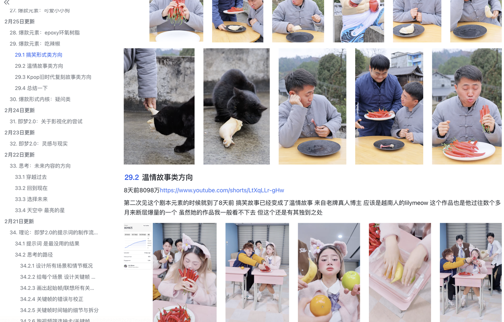
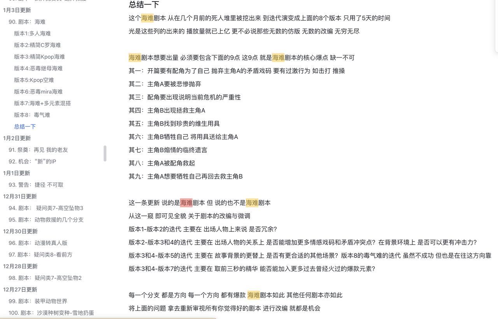
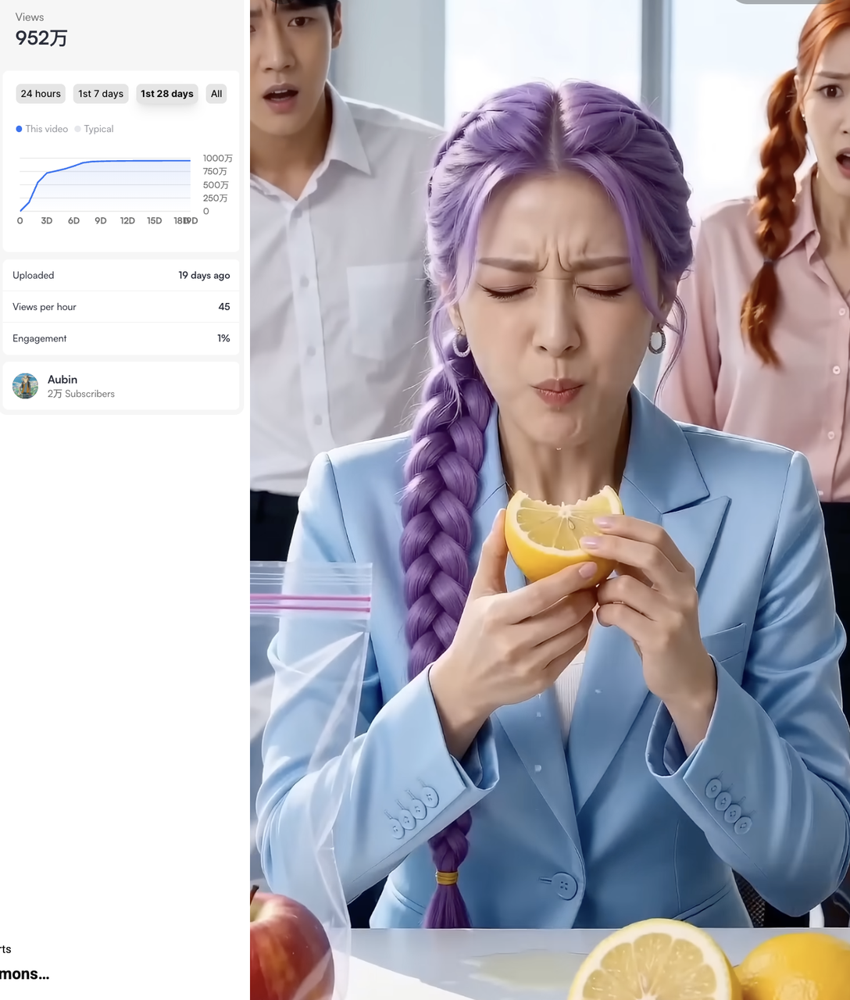
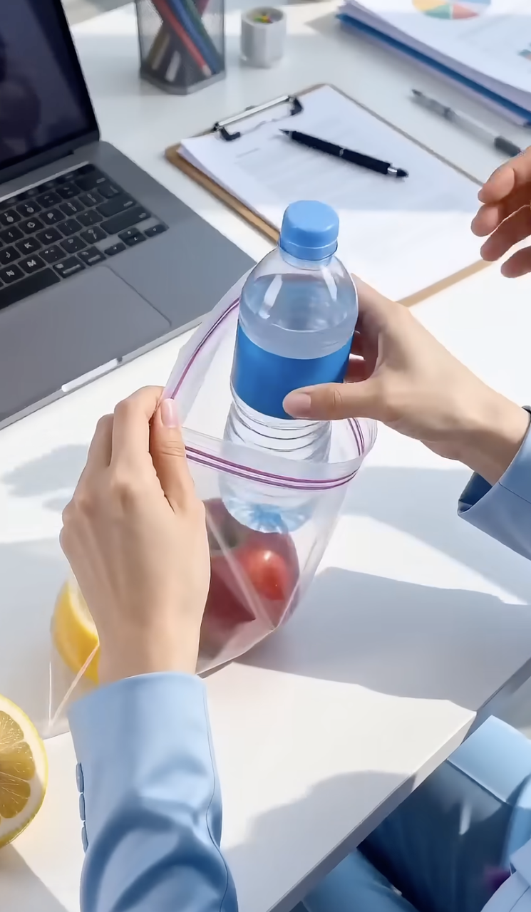
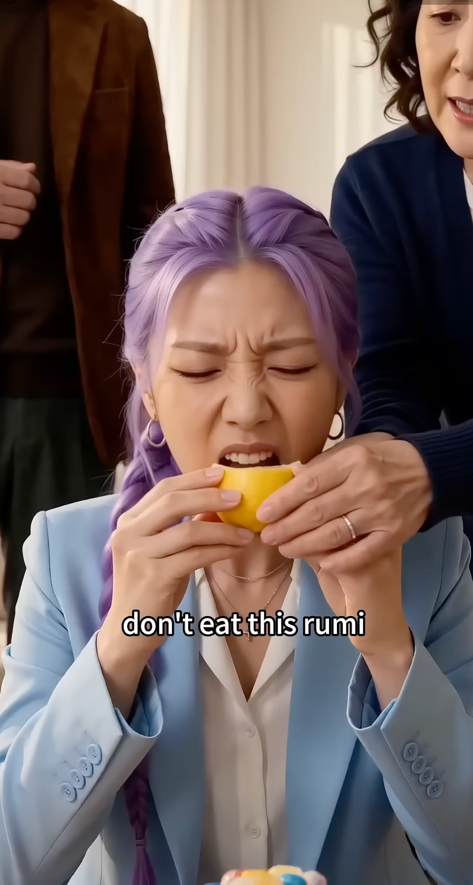
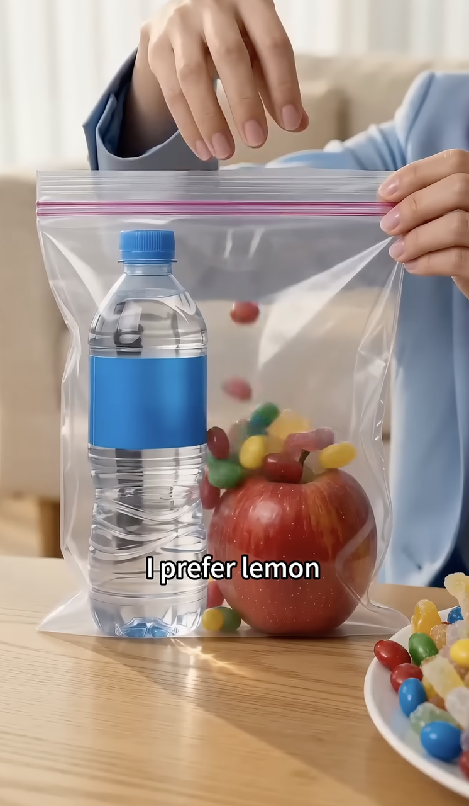
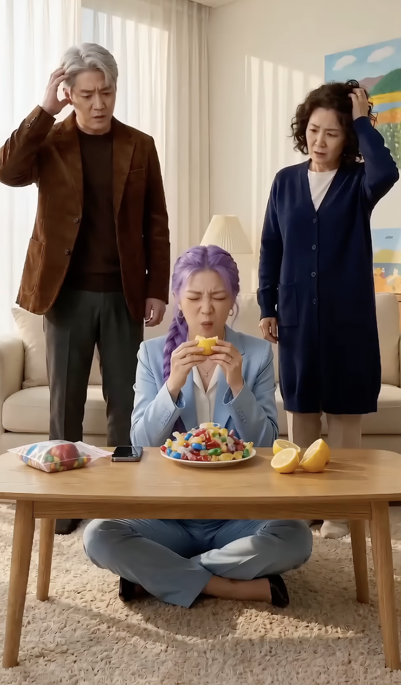
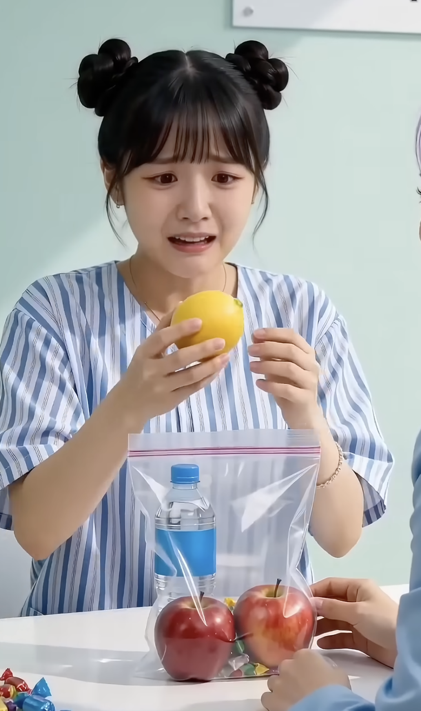

当天重点
原文核心不是“吃辣椒”这件事，而是异常开场 → 刺激升级 → 为爱牺牲反转这一套剧情骨架。
所以 4 月 1 日这次更新，真正有价值的是把旧爆款拆成可连续改壳的剧本模板，而不是只记一个题材名。
这页按飞书原文顺序重排：先讲旧爆款为什么还能打，再落到 1.1 吃柠檬的案例截图，最后收束到 1.2 ~ 1.5 的变种方向与复刻动作。
原文核心不是“吃辣椒”这件事，而是异常开场 → 刺激升级 → 为爱牺牲反转这一套剧情骨架。
所以 4 月 1 日这次更新，真正有价值的是把旧爆款拆成可连续改壳的剧本模板，而不是只记一个题材名。
原文先回顾 2 月 25 日已经跑通过的“吃辣椒”结构，再说明：爆款生命周期虽然常按 20 天算，但真正该拆的是核心爆点，不是表面题材。
在这条线上，海难剧本和吃辣椒剧本其实是同一类：开头用异常行为抓人，后段靠“为了爱愿意牺牲自己”的情感反转把记忆点抬高。


这部分在飞书里露出了 1 条明确的 YouTube Shorts 链接，并配了多张剧情截图。页面已经把链接和截图都转成本地资源。
吃柠檬变种（原文备注：19 天前 / 952 万 / 英文）
下面这组图已经从飞书页面下载进仓库，可以直接跟着做镜头拆解、动作复刻和镜头顺序分析。






把异常动作从“吃刺激物”换成“人物形象反差”，保留可围观性。
把动作换成更明显的肢体反差，适合做第一眼停留钩子。
说明原文不是只给一个壳，而是鼓励同结构连做多个壳去测反馈。
无论换什么壳，前三秒都先给异常行为，中段持续加码，结尾再收情绪反转。
优先测吃柠檬 / 化女妆 / 跳芭蕾三类变种，镜头节奏沿用这批截图去排。
这次下载到仓库的 15 张图可以直接作为镜头顺序参考，不用再回飞书里翻。